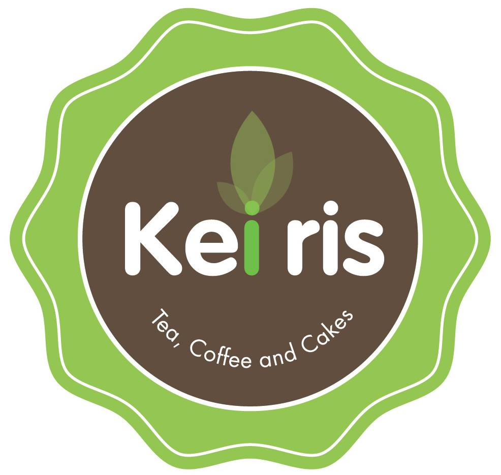

<!-- Footer -->
<footer>
  <!-- <p>Keiris</p> -->
  <div class="container footer-keiris">
    <div class="row footer-keiris-content">
      <div class="col-12 col-xl-12 footer-keiris-logo">
        <!--  -->
        <h1>Ke<span class="logo-style">i</span>ris</h1>
      </div>
      <div class="col-12 col-xl-5 footer-keiris-info">
        <h5>Chất lượng</h5>
        <p>We are ThemeFusion, a creative and dedicated group of individuals who love WordPress almost as much as we love our customers</p>

        <h5>Phục vụ</h5>
        <p>We are ThemeFusion, a creative and dedicated group of individuals who love WordPress almost as much as we love our customers</p>

        <h5>Hỗ trợ</h5>
        <p>We are ThemeFusion, a creative and dedicated group of individuals who love WordPress almost as much as we love our customers</p>
      </div>
      <div class="col-12 col-xl-2 footer-keiris-map">
          <h5>Thông tin</h5>
          <p>Giới thiệu về Keiris.vn</p>
          <p>Tuyển dụng</p>
          <p>Gửi góp ý/Than phiền</p>
          <p>.</p>
          <p>Quy chế hoạt động</p>
          <p>Điều khoản mua bán</p>
      </div>
      <div class="col-12 col-xl-5 footer-keiris-map">
          <h5>Hệ thống cửa hàng Keiris</h5>
          <p>Q.10: 770F, Sư Vạn Hạnh (nd), P.12</p>
          <p>Thủ Đức: 336, Võ Văn Ngân, Q. Thủ Đức</p>
          <p>Q.10: 286, 3 tháng 2, P.12</p>
          <p>Bình Dương: 187, Yersin, Tp.Thủ Dầu Một</p>
          <p>Biên Hòa: 30, Dương Tử Giang, Tp. Biên Hòa</p>
      </div>
    </div>
  </div>
</footer>